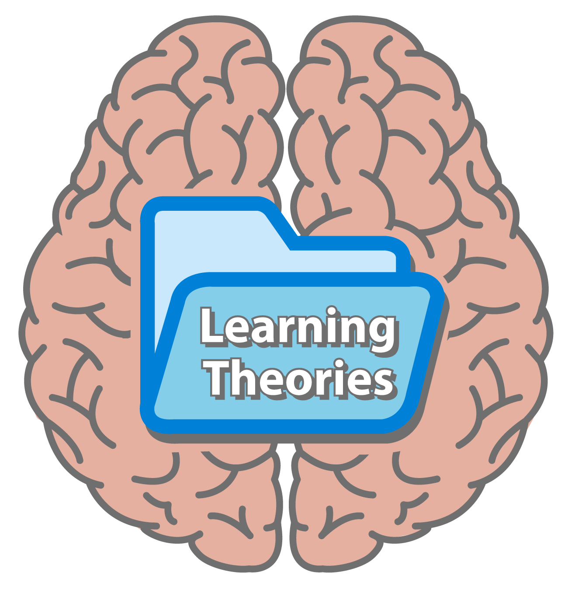
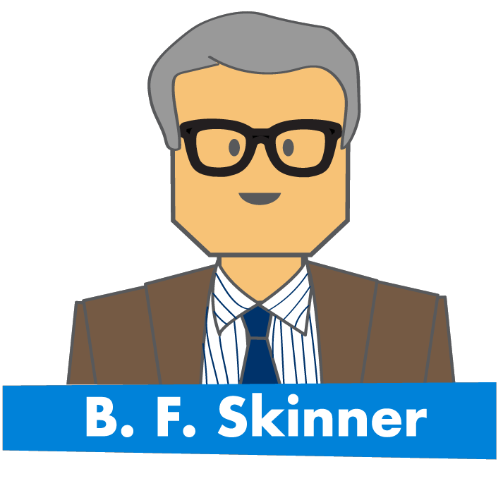
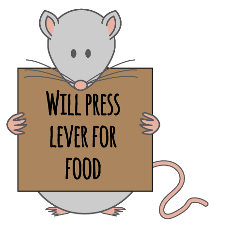
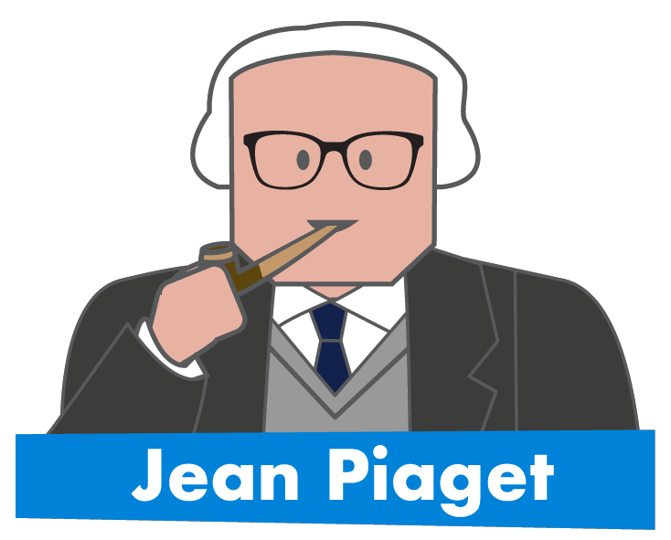
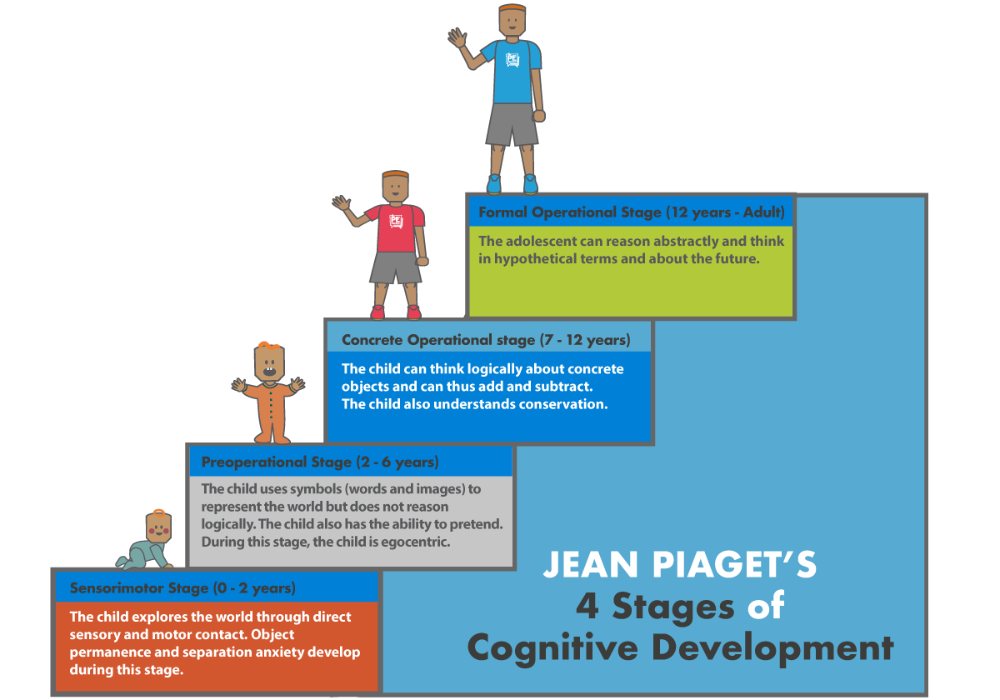
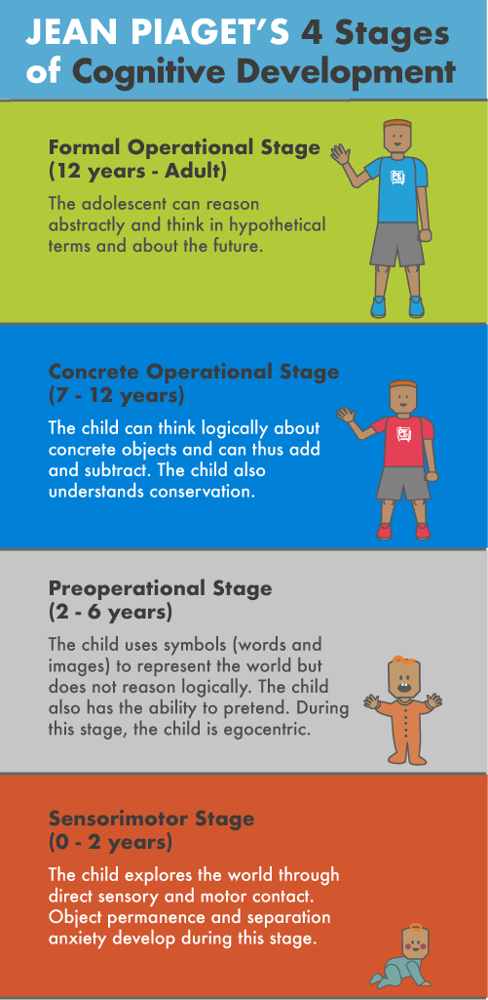
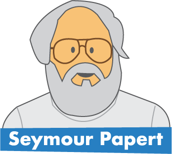
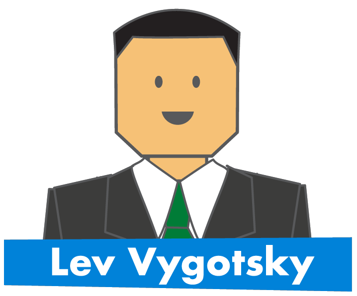
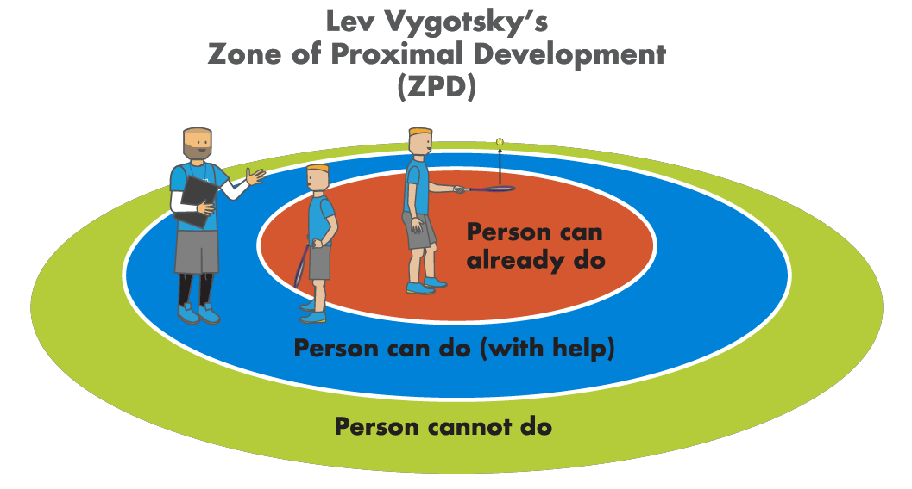
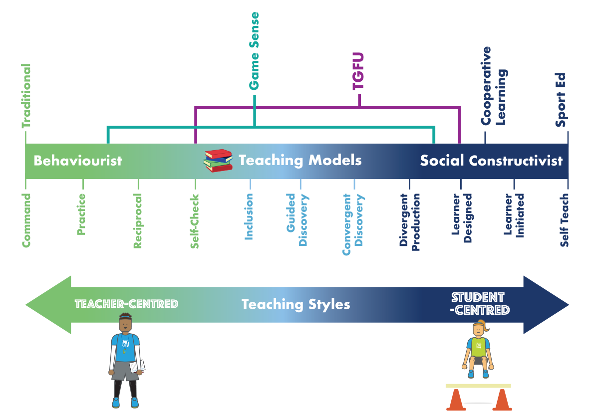

Learning Theories in PE
As a Physical Education teacher, it is important to understand a variety of learning theories as they explore the different ways students learn and retain information. In general education there are several main learning theories. In Physical Education, there are four primary learning theories that can be closely associated with the most prevalent teaching models and styles. These are:

- Behaviourist Learning Theory
- Cognitive Constructivist Learning Theory
- Constructionist Learning Theory
Behaviourist Learning Theory in Physical Education
Since the mid-1900s, behaviourist learning theory has been a prominent and seemingly successful approach to education which had been adopted by schools across the world, and is still prevalent in many today (1). Behaviourism advocates that human behavior can be shaped by ‘conditioning’ due to stimulus and response (2, 3, 4). Operant Conditioning is of most significance to education and behaviourism theory, which was formulated by American psychologist B.F. Skinner (1904-1990) (1, 5).

During the 1930s, Skinner distinguished the components of Operant Conditioning from his behavioural studies of rats and pigeons using a ‘Skinner box’. This was an empty box with a lever inside that when pressed by an animal a food pellet was rewarded. The food acted as a ‘Positive Reinforcement’ and increased the likelihood that the rats would press the lever again. Likewise, ‘Negative Reinforcements’ were also found to increase the frequency of correct responses when using an aversive stimulus as rats pressed a lever to stop an electric shock (1, 2, 6). Consequently, Skinner made generalisations of his discoveries and wanted to apply his hypothesis to humans, so he became interested in education (1, 2). In Skinner’s educational work, he deduced that like animals, the majority of human behaviours can be controlled by using positive and negative reinforcement and that the ‘principles of operant conditioning can explain all human learning’ (1, 7). Thus, he hypothesized that teachers could train pupils to replicate certain behaviours through the giving of tangible rewards (e.g., smiles and nods, merits, privileges etc.) and discourage undesirable behaviours by punishing students or withholding expected rewards (8).
Skinner also emphasised the importance of highly structured, step-by-step materials which helped students work towards externally imposed goals and were as ‘error-free’ as possible. This was due to his belief that making mistakes demoralised or demotivated pupils and interfered with their steady progress. Therefore, Skinner advocated that lessons should be highly structured and ‘scripted’, with teacher’s words and planning being pre-ordained, and fixed. As a result, his theories of learning are often associated with ‘traditional’ teaching methods (8). Where the teacher makes all the important decisions, and the students are passive receptacles waiting to be filled with knowledge.

Throughout the 1900s, PE lessons across the world have been most closely identified and associated with teacher-centred styles of learning which is a traditional/behaviourist pedagogical model (9; 10). Mosston and Ashworth (1994; 2002) identified 11 different teaching styles in PE, starting with the five teacher-centred styles such as the ‘command’ and ‘practice’ style. Followed by six student-centred styles, which included ‘guided discovery’ and the ‘learner initiated’ style (13). Although this range of teaching styles exists, numerous investigations have identified that even to this day that too many PE teachers opt for the more teacher-centred, didactic styles where the teacher makes all the decisions, and the pupils mindlessly follow, copy and repeat (12; 14; 9; 15). To learn more about teaching styles, check out our article HERE.

The traditional pedagogical model in PE adheres to a logical sequence of ‘drill – drill – game’, where the students have to pass through a series of isolated skill replication drills before being rewarded with a game at the end. This dependence on behaviourist approaches has been associated with PE’s convoluted relationship with sports coaching, which prioritises the need to ‘cover’ specific technical skills through regimented and highly-structured training sessions (14, 16).
As a result, numerous educationalists and modern learning theorists have discounted behaviourist theory both in the classroom and PE lessons for a variety of reasons (9, 15). Such as its theoretical simplicity, which is derived from experiments with animals; its anti-humanistic refusal to acknowledge human freedom and choice; its inability to explain higher-order forms of learning; its lack of emphasis on mental activity, concept formation and understanding; its overemphasis on extrinsic rewards which can diminish intrinsic motivation, learner independence and creativity; the rejection of content-based learning; and the diminished role of learners as passive receptacles which can leave pupils bored and unsatisfied (2, 6, 8). Therefore, it would be advised that PE teachers steer away from predominantly using behaviourist/traditional approaches to teaching physical education. However, we recognize that in certain topics and circumstances that a more traditional approach may be preferred, particularly when safety is paramount (e.g., a Javelin lesson).
Cognitivist Constructivist Learning Theory in PE
In the 1960s, the cognitivist revolution began which presented a more scientific approach to the mental processes of a learner’s thinking, memory, knowing and problem-solving (6, 17). Essentially, cognitivists compared the human mind to a computer which receives information, processes it, and then produces a certain outcome (17). As a result, cognitivists believe that teaching can be a technical-rational activity which can be logically sequenced into ‘input’, ‘storage’ and ‘output’ processes. But to ensure effective learning, new knowledge must be built upon existing knowledge (like building blocks in the brain) for a person to know how to respond to incoming stimuli or information (18). Thus, teachers are seen as in control of learning and are encouraged to design lesson material that stimulates pupils’ cognitive processes and encourages them to discover information for themselves and to make their own mental connections. Nevertheless, cognitivism has been criticised for viewing learning as an individual mental event as it failed to acknowledge social processes and embodiment, as well as reflective practice. Therefore, cognitivism is viewed as a progressive step towards a learning theory that combines cognitive processes with individual and shared meaning making - this is known as constructivism (6).
One of the leading theorists to the cognitive approach was Jean Piaget (1896-1980), a Swiss biologist and psychologist who is considered a pioneer of constructivism and renowned in the field of child development and education (1, 6). In 1936, Piaget’s theory of cognitive development was embraced and highly acclaimed for explaining how children construct a mental model of the world. There were three basic components of his theory:

- Schemas (building blocks of knowledge)
- Adaptation Processes that enable the transition from one stage to another (equilibrium, assimilation, and accommodation).
- Stages of Cognitive Development (sensorimotor, preoperational, concrete operational, and formal operational)
Schemas have been defined as a set of connected representations of the world which have been constructed by the learner through their experiences and are used to both understand and respond to situations. Piaget believed that as humans develop, they acquire schemas (or schemata), which are cognitive structures that govern organised thought and action (2, 19). Schemata reflect previous experiences and constitute an individual’s knowledge at any given time. Piaget presumed that schemas developed through maturation and experiences, and were built upon existing cognitive structures (2, 20).
In order for children to adapt their thinking from one place of knowledge or understanding to a more mature and developed state, Piaget emphasised the necessity of ‘equilibrium’, ‘assimilation’, and ‘accommodation’ (8, 21). He regarded ‘equilibrium’ as a state of cognitive balance, which occurred when a child could explain what they were perceiving around them. Within this state, children felt ‘secure’ in their current knowledge and understanding of the subject and, if applicable, could provide their best response. Whereas ‘assimilation’ is a cognitive process that consists of taking in new information that occurred through an individual’s interaction with the physical world, and then incorporating it with their pre-existing knowledge in order to develop their own logic or understanding (8, 22). Assimilation is associated with one’s continual and developing understanding of the world, and effects the way people conduct themselves in society (8). However, if the new information caused the individual to modify or change their existing knowledge or beliefs, then the process of ‘accommodation’ had taken place (1, 8, 21).
Piaget defined four stages of development that all children ‘naturally’ proceeded through, enabling them to manage increasingly more complex concepts in progressively more sophisticated ways (1, 8, 22). He believed that the principles of biological development could be applied to the stages of cognitive development and that these stages were fixed. Meaning that children couldn’t learn the concepts of the next stage until they had mastered the learning of their current stage. Thus, Piaget’s work was thought to provide teachers with a rough guide concerning the level of complexity that might be expected in a child’s thinking relative to their stage of development (1). Furthermore, Piaget recognised that learning should be a fundamentally interactive process where learners can ‘construct’ knowledge by making connections with their physical and social environments (8).


In order to facilitate active learning, Piaget identified that the teacher’s role is to accurately assess and identify students’ current stage of cognitive development, and then to set up appropriate and stimulating learning activities (2, 8). These activities should encourage pupils to explore, discuss, experiment, and make mistakes; thus, enabling students to go through the processes of disequilibrium, assimilation, accommodation, and equilibrium, resulting in more complex thinking and concept development (6, 8).
Thus, the term ‘cognitive constructivism’ comes directly from Piaget’s work and has been contributed to by others, including Bruner (26). Cognitive constructivism focuses more on facts and constructing knowledge within one’s own schemas and recognises that ‘social interaction does occur and may be part of the learning process’ (26, p.246). But ultimately, cognitive constructivism concludes that knowledge is constructed by the individual based on their own experiences and interpretations. A cognitive constructivist classroom emphasises ‘student-centred’ teaching which nurtures independence, autonomy, curiosity, initiative, and active engagement by learners (6, 8). It has been linked to inquiry/discovery learning which encourages teachers to carefully plan and organise problems for students to solve, which are tailored to individual’s needs (8, 26, 27).
In PE, there has been an emergence of ‘constructivist’ teaching approaches, from ‘guided discovery’ and similar teaching styles, to pedagogical models such as Game Sense. Guided Discovery is one of six student-centred teaching styles in the aforementioned ‘Spectrum of Teaching Styles’ in PE (12), and falls in alignment with Bruner’s notion of ‘Discovery Learning’. In this style, the teacher poses a problem and plans a series of questions and tasks that direct pupils towards a pre-determined solution (11, 12). Other teacher-centred styles include ‘convergent discovery’, ‘divergent production’, ‘learner designed’ and more, all leading to higher-levels of student independence and deeper levels of cognitive dissonance (13). However, the constructivist approaches associated with the different teaching models such as Game Sense are of greater interest for constructivist approaches.
Constructionist Learning Theory in PE

Building upon Piaget’s ‘Constructivist’ theory of learning, was Seymour Papert (1928-2016), a South African-American educator, mathematician and computer scientist who was a student of Piaget. Papert, developed the theory of ‘Constructionism’ (a descendant of constructivism) which suggests that students learn best when they actively construct something meaningful. It is a hands-on, project based approach where learners build their knowledge by creating projects, often in social environments. As learners actively engage with the material, they will draw on personal experiences, and make learning visible and shareable with others (53). To put in plainly, constructionism is ‘learning by making’ (54). Thus, Papert believed that by engaging in the process of making, especially through computers and digital tools, students could explore concepts more deeply and creatively. As a result, knowledge is constructed as real issues and complex problems arise.
Papert’s key ideas include:
- Learning through doing Students learn best by actively engaging in the creation process.
- Technology as a tool for learning Computers and digital tools can be powerful allies in the learning process.
- Personal connections Learning becomes more effective when it relates to personal experiences and interests.
With regards to ‘Constructionist’ teaching models in PE, Teaching Games for Understanding (TGfU) aligns most with Papert’s principles. In TGfU, the emphasis is on understanding the tactical and strategic aspects of games rather than mastering technical skills. Students are encouraged to explore and develop their understanding of how games work through modified games and problem-solving activities, making their learning more meaningful and situated (55).
The relationship between constructionism and TGfU lies in:
- Active engagement: Like constructionism, TGfU involves learners actively engaging with the content, allowing them to construct their understanding of game tactics and strategies.
- Learning through doing: TGfU involves playing and exploring games, rather than just practicing isolated skills, aligning with Papert’s idea that learning happens best when people are involved in meaningful tasks.
- Reflection and iteration: In both TGfU and constructionism, learners reflect on their performance and refine their understanding through experience, experimentation, and feedback.
By applying Papert's constructionist approach, students in PE can become more autonomous learners, develop critical thinking, and deepen their understanding of games in a way that is personal, social, and connected to real-world experiences.
Theoretical underpinnings are not always black and white. For example, depending upon how TGfU and Game Sense are delivered will depend upon whether it is more 'constructivist' or 'constructionist'. These teaching models seek to contextualise learning in PE through modified and authentic game situations (9). This contrasts with the aforementioned traditional/behaviourist approach where skills and tactics are broken down into small pieces and learnt in decontextualized and isolated skill practises or drills (28, 29). Rather, TGfU and Game Sense present learners with a larger and more meaningful ‘chunk’ of content by focusing on developing skills through conditioned games which highlight specific tactical situations, that require learners to make decisions, problem-solve, answer questions, and reflect on their choices and performance (15, 30). Consequently, these pedagogical models are seen to take their root in constructivist learning theories, and are the ideal context to develop skills and construct meaning across the psychomotor, cognitive and affective domains (13; 31, 32; 33). Research around these models advocate that skills are more effectively learnt in context rather than in isolation, and that skill transference to other situations are also improved when delivered in a game situation (34). Additional benefits also include: increased pupil autonomy, motivation, engagement and decision making (33, 35).


The dominance of constructivist approaches in education have prevailed for over sixty years, but only began to emerge in PE literature over the past twenty years or so (16, 32, 36). In this time, there have been numerous concerns about the ideological assumptions professed by Piaget, and calls for more research evidence to support the predicted benefits of constructivist pedagogical models in PE (13, 37). The criticisms of Piaget’s work are primarily due to the rigidity of his stages of cognitive development, as the notion that all children pass through each stage and reach the formal operational stage is ignorant of socio-economic and cultural factors which could support or hinder an individual’s development (1, 2, 8). Furthermore, pupils that fall behind in terms of ‘normal progress’ may be labelled as cognitively deficient by teachers and dismissed. Plus, Piaget mentioned little about pedagogy, except that the teacher’s primary role is to assess students’ developmental level, and then provide appropriate learning materials (8). This aspect alone has been deemed ‘logically flawed’ due to the impossibility of always starting from what the child knows and their stage of development (38). Furthermore, Piaget has been criticised for his overemphasis on the individual rather than the advantages of social and cultural learning, as groups of individuals can learn together and learn from one another (2, 6, 8).
To learn more about teaching models, check out our article HERESocial Constructivism Learning Theory and Physical Education

Building upon Piaget’s contribution to constructivism is Russian psychologist Lev Semyonovic Vygostky (1896-1934), whose theories placed a greater emphasis on the role of social factors in learning , and prioritised language in the process of intellectual development (1, 2, 38). His theory of learning and development has many commonalities with Piaget’s, but his key aspects are seen to add an important dimension to the constructivist domain, helping move the theory forward (1, 8). Thus, Vygotsky is seen as a ‘social constructivist’ as he placed prominence upon the social interactions between the learner and others, and urged educators to view teaching and learning as social activities(1, 8).
Vygotsky regarded the social environment as critical for learning, and that social interaction is a phenomenon that induces changes in human consciousness and transforms learning experiences (2, 39). He believed that children’s interactions with more knowledgeable others in the environment stimulated developmental processes and fostered cognitive growth. Furthermore, he felt the key to human development consisted of the learner’s interactions with the world, including their interpersonal experiences, contextual (cultural-historical) and individual factors, which collectively transform their thinking (2).
Vygotsky accentuated the importance of language as a tool for social interaction and knowledge construction, which enhances learning through scaffolding the ‘zone of proximal development’ (ZPD) (6). The ZPD is the theoretical gap in understanding that a given individual can achieve on their own, and what they can achieve through problem solving with guidance by a more knowledgeable other (1, 38). An example of ZPD is a teacher and a student working together on a task that the child cannot complete independently due to the difficulty level, but with teacher assistance is able to do so (2). Thus, this notion suggests that what the child could achieve with assistance today, could be completed independently tomorrow (40).

In a social constructivist classroom, teachers are invited to adopt ‘student-centred’ strategies that encourage dialogue and collaboration with the teacher and peers (8). This requires the teacher and learners to play untraditional roles, as the teacher facilitates pupils’ learning by posing problems of emerging relevance and by asking divergent questions. As a result, pupils’ responses then drive lessons, determine pedagogy, and influence content (2, 6, 41). Thus, the classroom should become a community of learning, where the environment enables peer instruction, group work, discussion, and small group instruction (2, 42). Vygotskian advocates have applied his theories to pedagogical approaches which include guided learning, scaffolding, and cooperative learning which have been frequently used in classrooms across the world (6, 43, 44). In the instance of cooperative learning, reports have included improved ‘classroom environment, academic achievement, active learning, social-skill development and classroom equity’ (45 p.16).

In PE, there have been a few dominant social constructivist models, the most prominent being ‘Cooperative learning’, and ‘Sport Education’ (aka Sport Ed.) (15, 32). Cooperative learning is a student-centred pedagogical model which shifts the focus of learning to pupils (15). A prime example is ‘Jigsaw’, which consists of placing learners into small, heterogeneous ‘base’ groups. These members will then be assigned ownership of a learning outcome which require them to learn in ‘specialist’ groups with other members of the class not from their base group. Once a satisfactory level of mastery has been achieved, pupils return to their base groups and take it in turns to teach each other their learning outcome (15, 45). Research on such cooperative learning approaches in PE have yielded ‘overwhelming positive’ results and have purported benefits in the development of interpersonal and social skills, improved student engagement and behaviour, cognition, and psychomotor learning (46 p.101).
The other notable social constructivist model is ‘Sport Ed.’, which places the greatest emphasis on pupil independence as they are responsible for leading their own learning (15). Students are placed into small-sided teams for the entire length of the unit, which seeks to conduct games as authentic competition within a mini sports season. Within these teams, each member assumes a different role (i.e. skills coach, fitness trainer, tactical coach, referee etc.) which requires them to plan and lead various practices in order to improve team performance and to prepare for competition. At the culmination of the unit, teams may have a sports festival to celebrate their accomplishments before final points are accumulated and a winning team is announced (15, 47, 48). The benefits of using a Sport Ed. model are numerous and consist of: increased enjoyment and investment in PE lessons; improved student engagement, motivation and attainment (particularly for marginalised pupils); positive changes in interpersonal behaviours, cultivation of new friendships; and more skilful and literate games players (49, 50, 51). Thus, many advocates recommend including a unit of Sport Ed. within their curriculum map for PE (49).

Criticisms of Vygotsky’s social constructivist learning theory believe his most controversial contention was that all higher mental functions originated in the social environment and did not focus on how individual meaning-making contributes to development (2, 38). He also makes too sharp a distinction between deliberately taught, ‘scientific’ concepts and outside the classroom, ‘everyday’ concepts (8). Furthermore, he failed to acknowledge the different values and beliefs of different cultural groups and how these may result in variations in learner’s developmental experiences (38). With regards to social constructivist approaches in PE, the primary concerns revolve around the competency of both the teacher and the learners. For teachers, successful implementation of either cooperative learning or Sport Ed. requires a high degree of organisation and subject knowledge, as improper planning and structure can result in insufficient learning experiences (2). Whilst students require advanced independent skills in order for them to become successful, otherwise the likelihood of off-task behaviour and task incompletion will be greater (41).
Complex Learning Theory
In physical education lessons today, it is still all too common to see traditional/behaviourist approaches being predominantly used in our subject (15). Our aim is not to rid the use of them altogether. Rather, to encourage practitioners to utilise a range of learning theories, which can co-exist in the PE curriculum in order to provide a more sophisticated and multi-dimensional approach to learning. This idea runs in alignment with Davis and Sumara’s (2003) idea that all the best parts of the varying constructivist approaches can be combined to form a ‘Complex Learning Theory’ (CLT). Taking this one step further, a neo-CLT in PE can be devised by educators which include components of behaviourist and cognitivist ideas which can act as a stepping stone towards more social constructivist models of teaching. In some Asian cultures, behaviourist models of learning can be seen as a necessary foundational element which acts as a prerequisite to creative development (6). Therefore, the different theories of learning and their corresponding teaching models in PE can be placed on a continuum with behaviourist and social constructivist approaches at opposing ends (figure 1).

Figure 1. Continuum of Behaviourist to Social Constructivist Teaching Models and Styles in Physical Education
NB: TGfU and Game Sense models can be seen as being on a sliding scale, as each can be delivered in a range of ways.

In conclusion, a Complex Learning Theory approach which utilises a range of learning theories, teaching styles and models could be translated into a curriculum map for PE, with earlier lessons/units at the beginning of the year having more teacher-centred, behaviourist approaches. Then as the school year progresses, the curriculum can gradually evolve into more student-centred/constructivist approaches. Thus, students in PE would experience a broad range of teaching and learning experiences which will demand for increasing levels of autonomy and independence, and will develop their physical, cognitive, social and affective skills. Obviously, a one-size-fits-all model is an unrealistic suggestion and may not be applicable to younger or less able students. However, physical educators are urged to develop the whole-child by using a range of teaching models in their practice, with the aim of students becoming independent, physically literate, socially competent, and cognitively resilient learners.
References
- Pritchard, A. (2017). Ways of Learning : Learning Theories for the Classroom. London: Routledge.
- Schunk D. (2014) Learning Theories: An Educational Perspective. 6th ed. Haslow: Pearson Education Limited.
- David L, (2007) "Behaviorism," in Learning Theories. Learning Theories [online]. Available from: https://www.learning-theories.com/behaviorism.html [accessed 17 December 2018]
- Skinner, B. F. (2011). About behaviorism. New York: Vintage.
- Haggbloom, S.J., Warnick, R., Warnick, J. E., Jones, V.K., Yarbrough, G.L., Russell, T.M., Borecky, C.M, McGahhey, R. et al. (2002). "The 100 most eminent psychologists of the 20th century". Review of General Psychology, 6(2), pp.139–152.
- Jordan, A., Carlile, O. & Stack, A. (2008). Approaches to Learning: A Guide for Teachers [online]. Berkshire: McGraw-Hill Education. Available from ProQuest eBook Central [accessed 17 December 2018].
- Skinner, B.F. (1958). Teaching Machines. Science, 128 pp.969-977.
- Moore, A. (2012) Teaching and Learning: Pedagogy, Curriculum and Culture. 2nd ed. London: Routledge.
- Singleton, E. (2013). “Another damned, thick, square book!” Tracing learning theory in physical education textbooks, in Ovens, A., Hopper, T., Butler, J. (ed.) Complexity Thinking in Physical Education [online]. London: Routledge. Available from Dawsonera [accessed: 29 December 2018].
- Blair, R. & Whitehead, M. (2015). ‘Designing teaching approaches to achieve intended learning outcomes’, in Capel, S. & Whitehead, M (ed.). Learning to Teach Physical Education in the Secondary School: A Companion to School Experience. 4th ed. London: Routledge.
- Mosston, M., Ashworth, S. (1994). Teaching Physical Education. 4th ed. Ohio: Merrill.
- Mosston, M., & Ashworth, S. (2002) Teaching physical education. 5th ed. Boston: Benjamin Cummings.
- Mawer, M. (1999). ‘Teaching Styles and Teaching Approaches in Physical Education: Research Development’, in Hardy, C. & Mawer, M. (ed.). Learning and Teaching in Physical Education. London: Falmer Press
- Jess, M. (2012). ‘The future of primary physical education: A 3-14 developmental and connected curriculum’ in Griggs, G. (ed.). An introduction to primary physical education. London: Routledge.
- Griggs, G. (2015) Understanding Primary Physical Education. London: Routledge.
- Rink, J. (1999). ‘Instruction from a Learning Perspective’, in Hardy, C., & Mawer, M. (ed.). Learning and Teaching in Physical Education. London: Falmer Press.
- David L, (2015) "Cognitivism," in Learning Theories. Learning Theories [online]. Available from: https://www.learning-theories.com/cognitivism.html [accessed 19 December 2018].
- McLeod, S. A. (2018b). Jean Piaget's theory of cognitive development. Simply Psychology [online]. Available from: https://www.simplypsychology.org/piaget.html [accessed 18 December 2021].
- Flavell, J. (1985). Cognitive Development. 2nd ed. Englewood Cliffs, NJ: Prentice Hall.
- Piaget, J. (1962). Play, dreams and imitation. New York: Norton.
- Kegan, R. (2018) ‘What “form” transforms? A constructive-developmental approach to transformative learning’, in Knud, I. (ed.). Contemporary theories of learning. 2nd Edition. Oxon: Routledge.
- Piaget, J. (1971). Biology and Knowledge. Edinburgh: Edinburgh University Press.
- Bruner, J., Goodnow, J., & Austin, G. (1956). A Study of Thinking. New York: Wiley.
- Bruner, J. (1996). The Culture of Education. Cambridge, MA: Harvard University Press.
- Bruner, J. S. (2009). The process of education. Harvard University Press.
- Powell, K. & Kalina, C. (2009). Cognitive and Social Constructivism: Developing Tools for an Effective Classroom. Education, 130(2), pp.241-250.
- Wenger, E. (2018). ‘A social theory of learning: Learning theorists…in their own words’, in Knud, I. (ed.). Contemporary theories of learning. 2nd ed. Oxon: Routledge.
- Anderson, J., Reder, L., Simon, H. (1996). Situated learning and education. Educational Researcher, 25, pp.5-11.
- Kirk, D. & MacDonald, D. (1998). Situated learning in physical education. Journal of Teaching in Physical Education, 17, pp.376-387.
- Mitchell, S., Oslin, J. & Griffin, L. (2013). Teaching Sport Concepts and Skills: A Tactical Games Approach for Ages 7 to 18. 3rd ed. Champaign, IL: Human Kinetics.
- Light, R. (2009). ‘Understanding and enhancing learning in TGfU through Complex Learning Theory’, in Hopper, T., Butler, J., & Storey, B. (ed.). TGfU…Simply Good Pedagogy: Understanding a Complex Challenge. Ottawa: HPE Canada.
- Light, R. (2013). Game Sense: Pedagogy for performance, participation and enjoyment. London: Routledge.
- Chedzoy, S. (2012) ‘The development of the physical education curriculum in primary schools in the united kingdom’, in Griggs, G. (ed.). An introduction to primary physical education. London: Routledge.
- Lamber, J. (2011). ‘Learning and teaching through games activities’, in Stidder, G. & Hayes S. (ed.). The really useful physical education book: learning and teaching across the 7-14 age range. London: Routledge
- Oslin, J., & Mitchell, S. (2006). ‘Game-Centred Approaches to Teaching Physical Education’, in Kirk, D., MacDonald, D. & O’Sullivan, M. (ed.) The Handbook of Physical Education. London: Sage. pp.627–651.
- Fox, R. (2001). Constructivism examined. Oxford Review of Education, 27(1), pp. 24-35.
- Chandler, T., & Mitchell, S. (1990). Reflections on “Models of Games Education”. Journal of Physical Education, Recreation & Dance. 61(6), pp. 19-21.
- Daniels, H. (2009) ‘Teachers and Learners’, in Daniels, H., Lauder, H. & Porter, J. (ed.). Educational Theories, Cultures and Learning : A Critical Perspective [online], London: Routledge. Available from ProQuest Ebook Central [accessed 19 December 2018].
- Bredo, E. (1997). The social construction of learning. pp. 3-45. In Phye, G. (ed.). Handbook of academic learning: The construction of knowledge. New York: Academic Press.
- Vygotsky, L.S. (1978). Mind in Society: The Development of Higher Psychological Processes. London: Harvard University Press.
- Myers, E. & Taylor, S. (2015). ‘Accredited qualifications and principles of classroom teaching’, in Capel, S. & Whitehead, M. (2015). Learning to Teach Physical Education in the Secondary School: A companion to school experience. Routledge: Oxon. pp.36-38.
- Riddle, E.M., & Dabbagh, N. (1999) Lev Vygotsky’s Social Development Theory [Online]. Available at: http://chd.gse.gmu.edu/immersion/knwledgebase/theorists/constructivism/vygotsky.html [accessed 18 December, 2022].
- Slavin, R. (1994). Using team learning. 4th ed. Baltimore: John Hopkins University, Center for Research on Elementary Schools.
- Slavin, R. (1995). Cooperative Learning. 2nd ed. Boston: Allyn & Bacon.
- Dyson, B. & Casey, A. (2016). Cooperative Learning in Physical Education and Physical Activity: A practical introduction. London: Routledge.
- Joyce, B., Calhoun, E. & Hopkins, D. (1997) Models for Learning: Tools for Teaching. Buckingham: Open University Press.
- Siedentop, D. (2002). Sport Education: A retrospective. Journal of Teaching in Physical Education, 21, pp.409-418.
- Siedentop, D. & Hastie, P. (2011). Complete Guide to Sport Education. 2nd ed. Champaign, IL: Human Kinetics.
- Hastie, P. (1998). Skill and tactical development during a sport education season. Research Quarterly for Exercise and Sport, 69, pp.368-379.
- MacPhail, A., Kirk, D. & Kinchin, G. (2004). Sport Education: Promoting Team Affiliation Through Physical Education. Journal of Teaching in Physical Education. 23, pp.106-122.
- Sun, Z. (2016). The Advantage of Using Sport Education Instead of Traditional Approach in Physical Education. Journal of Research & Method in Education, 6 (2), pp.13-16.
- Davis, B. & Sumara, D. (2003). Why aren’t they getting this? Working through the regressive myths of constructivist pedagogy. Teaching Education, 14, pp.123-140.
- Alanazi, A. (2016) ‘A Critical Review of Constructivist Theory and the Emergence of Constructionism’ In American Research Journal of Humanities and Social Sciences. 2(8) pp.1-8.
- Papert, S., &Harel, I. (1991). Situating constructionism. Constructionism, 36, 1-11.
- Pill, S., Gambles, E., & Griffin, L. (Eds.) (2023) Teaching Games and Sport for Understanding. 1st Edition. London: Routledge.